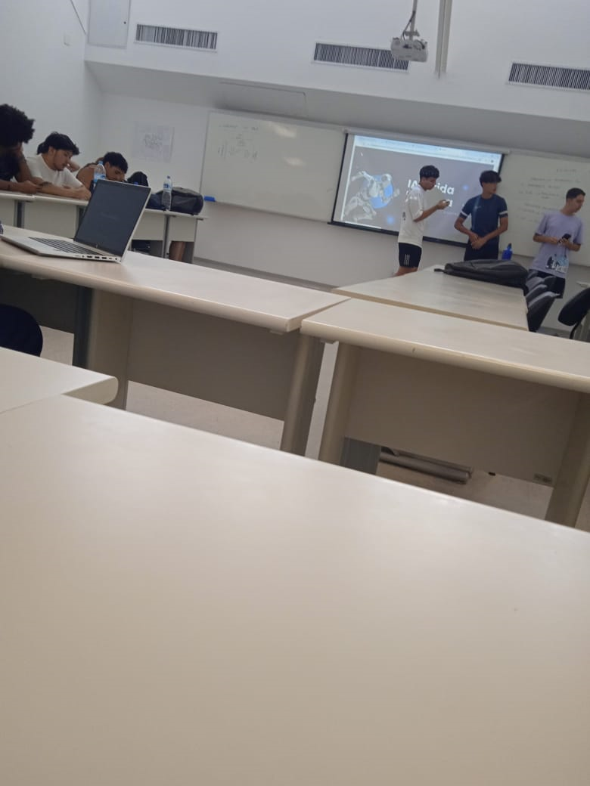

Na última integrada de humanas, a sala foi dividida em três grupos para organizar um debate, no qual o grupo do júri seria responsável por entregar o veredito. Como eu tenho mais afinidade com a professora Samira, de sociologia, escolhi a aula dela para fazer parte do júri.
No entanto, durante o processo, a sala começou a pressionar demais o meu grupo, e eu acabei perdendo a paciência. Em um momento de estresse, mandei todos calarem a boca, com o único objetivo de finalizar o documento de maneira que o debate respeitasse a posição e o posicionamento dos jurados, que conduziam o processo.
Apesar de me estressar e brigar, percebo que a experiência foi muito enriquecedora. Foi uma vivência que, apesar dos desafios, me ajudou a crescer e entender melhor a dinâmica de debates. No fim, gostei bastante e levo essa experiência como aprendizado! 🥰
Segue o registro de um debate que ocorreu no dia:
